Energy efficiency and actual VLM retrieval: definitions and full numerical results
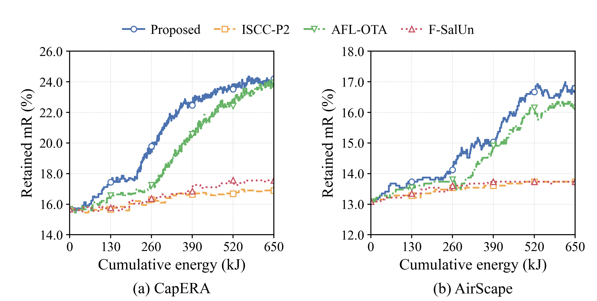
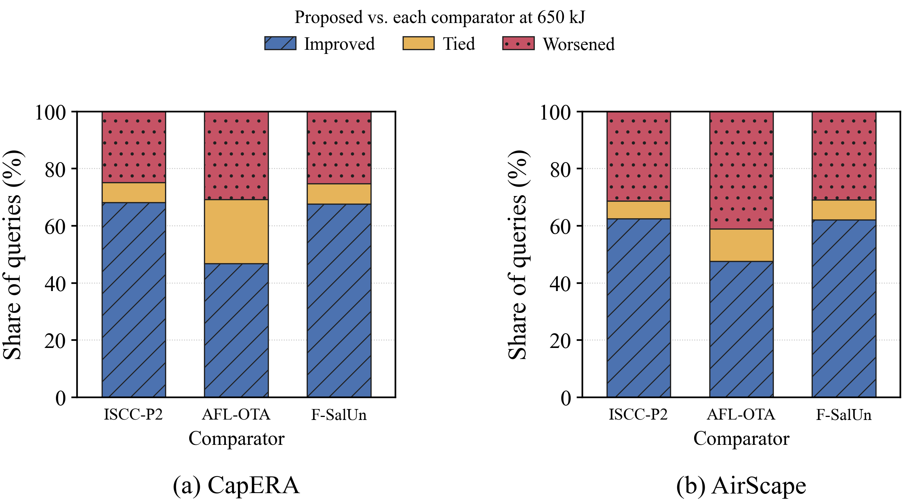
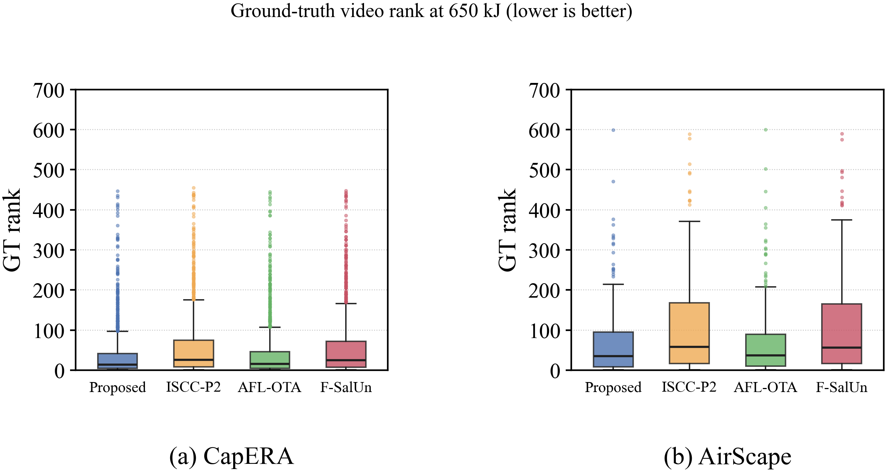
Open all new figures and experiment details
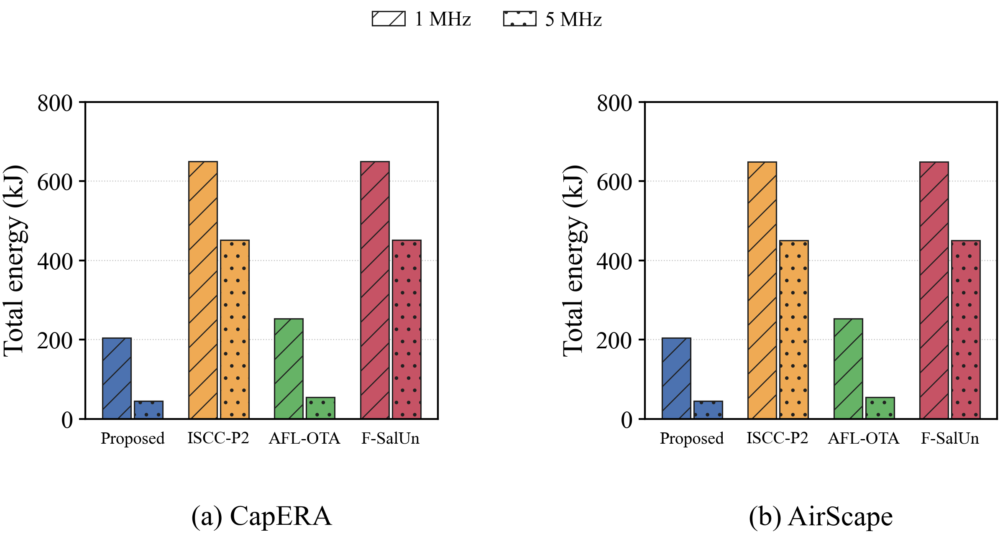
Parallel FL/FU advantage: Service timeline, matched serial costs and completed-work curves
Proposed = P-KS. CapERA · AirScape · ISCC-P2 · AFL-OTA · F-SalUn.
Methods, experiment conditions and results · Metrics CSV
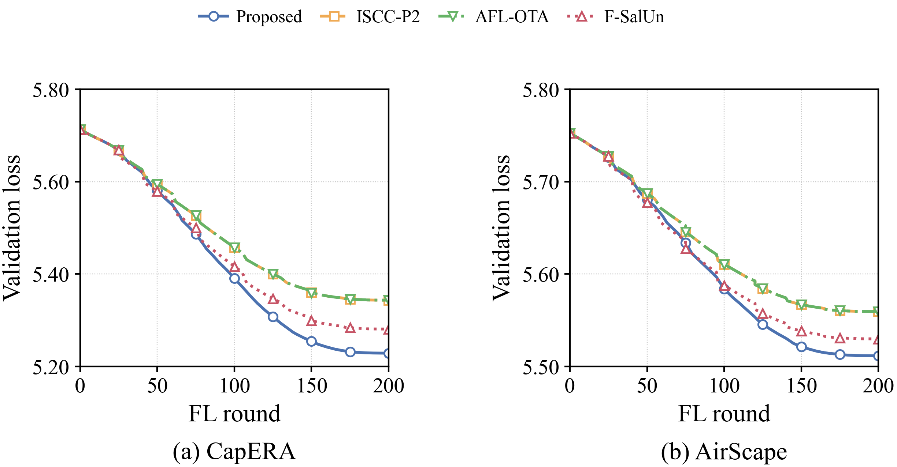
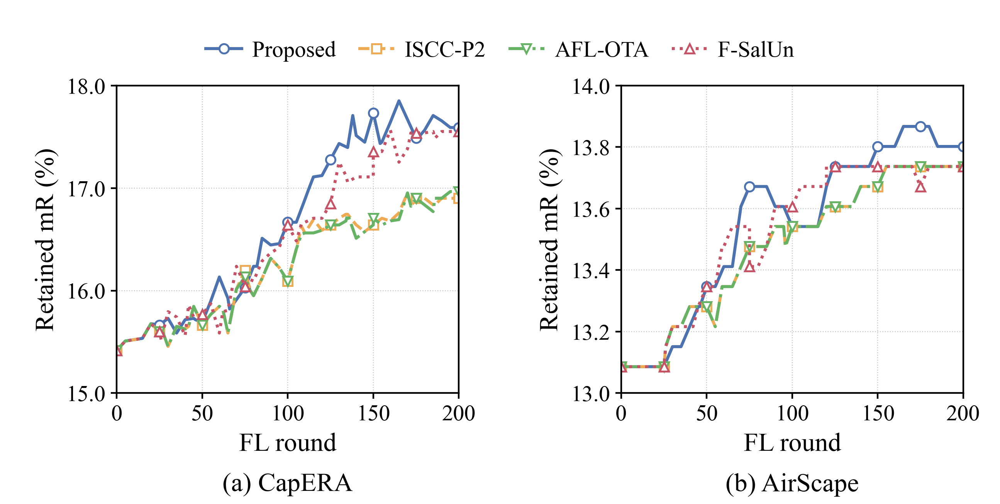
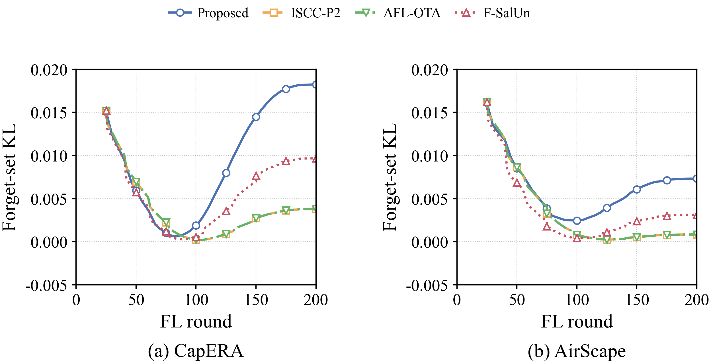
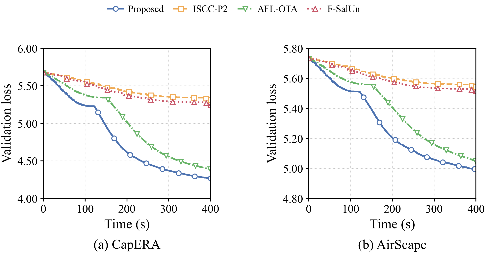
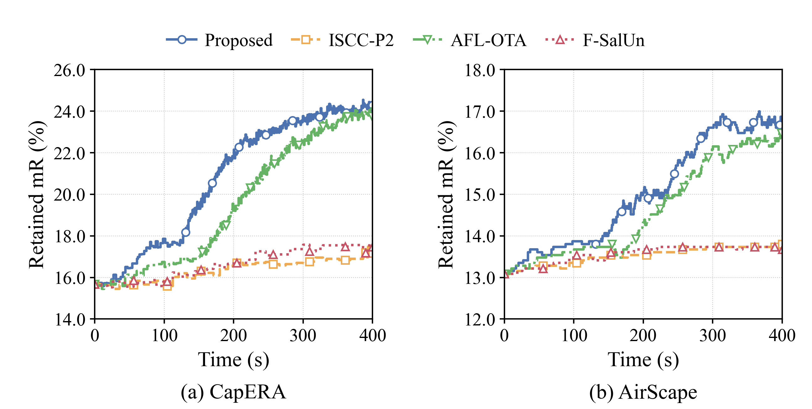
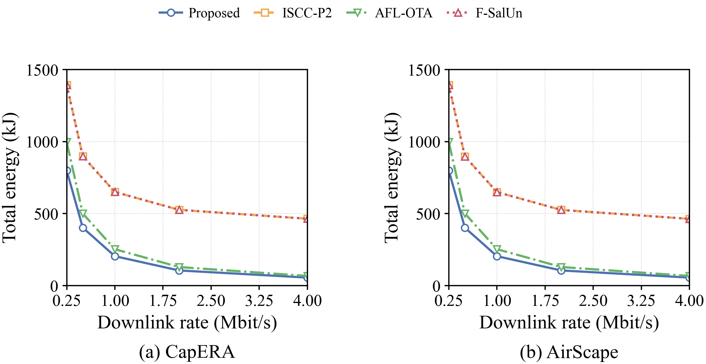
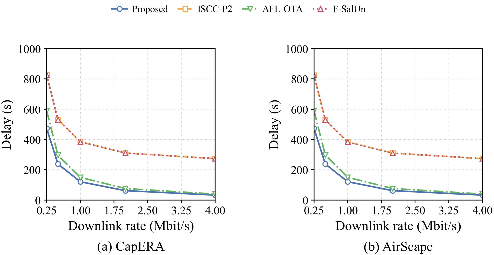
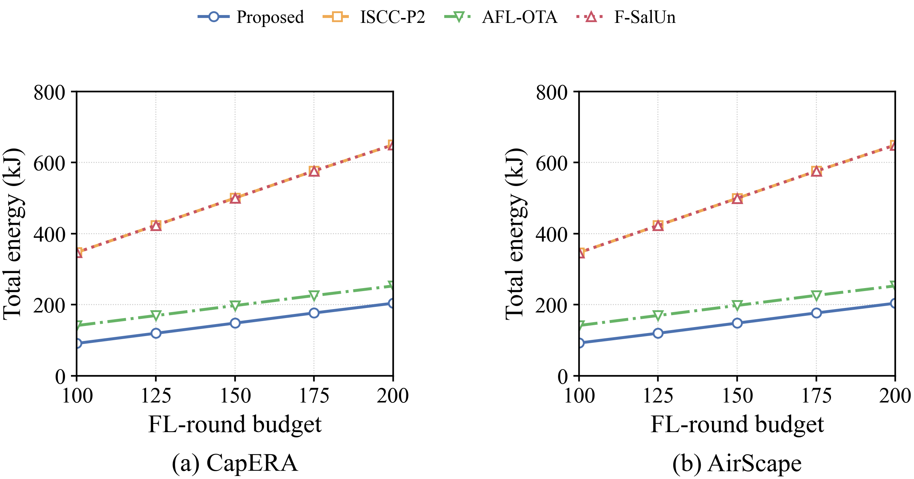
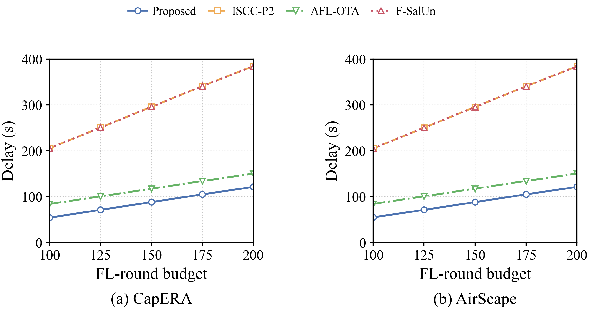
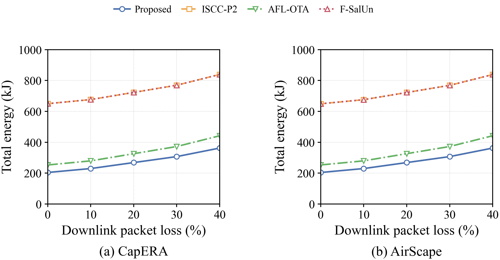
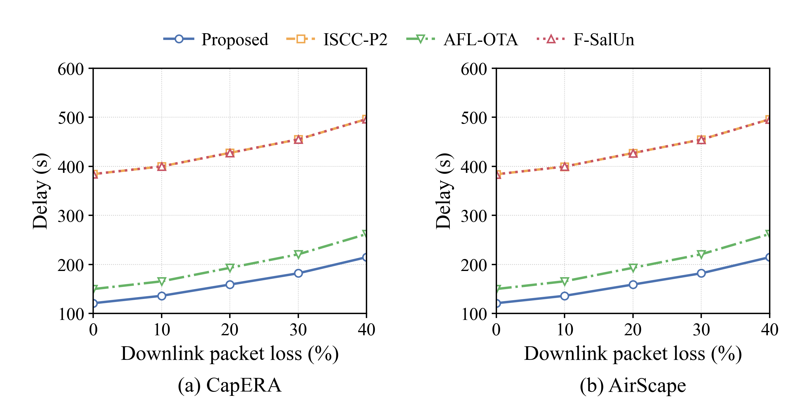
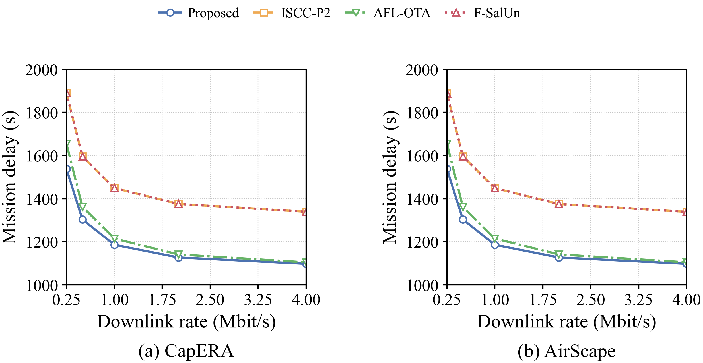
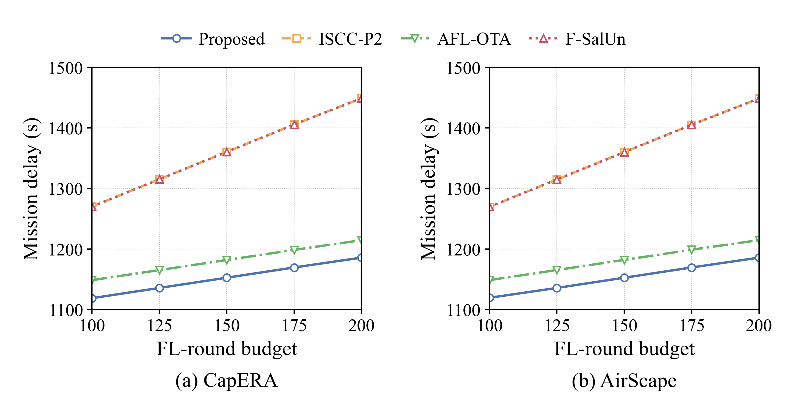
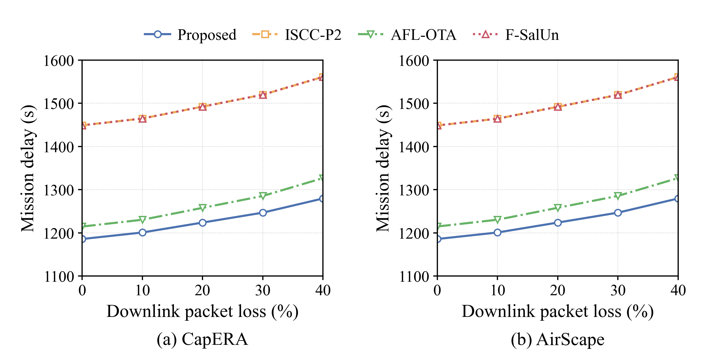
Historical bundles retain their original method names: Earlier four-method comparison · P-KS KL audit and P-KB25 study · Learning diagnostics · Earlier continuation study · Earlier sweeps